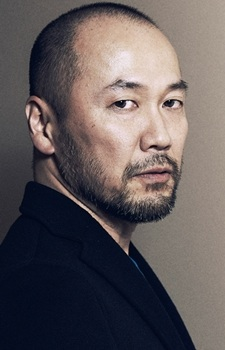

Takehiko Inoue
Biografía
Durante su vida estudiantil practicó el baloncesto, que luego se convertiría en uno de los temas principales de su obra. Su obra se caracteriza por la gran claridad y realismo de su dibujo, que refleja de modo fiel las proporciones del cuerpo. Su primer éxito como autor fue la conquista del prestigioso Tezuka Show, gracias a su obra Kaede Purple, centrada en el baloncesto. También trabajó por unos meses como asistente del dibujante Tsukasa Hōjō, autor de City Hunter.2
Su primer gran éxito llegó con la publicación de Slam Dunk,a partir de 1990. Se trataba de una obra de gran calidad gráfica y que combinaba un tratamiento emotivo y realista del baloncesto con un sentido del humor desbordante que lo hizo muy popular, en el mismo anime de Slam Dunk Inoue ha aparecido en algunos capítulos de la serie explicando las reglas básicas del baloncesto bajo el nombre "Dr T".
Tras 31 tomos de Slam Dunk, Inoue realizó una obra también centrada en el baloncesto, pero de un corte futurista, llamada Buzzer Beater. También realizó varias obras cortas, entre las que destaca Piercing. Sin embargo, no consiguió otro gran éxito hasta que comenzó a publicar Vagabond, una historia basada en la vida de Musashi Miyamoto, un guerrero legendario japonés, que sigue publicando actualmente. Alterna la publicación de esta obra con Real, centrada en el mundo del baloncesto en silla de ruedas. Actualmente Inoue es uno de los dibujantes de manga más importantes y respetados de la industria.
También ha diseñado los personajes del videojuego Lost Odyssey, un RPG de Mistwalker, empresa fundada por el "padre" de la prestigiosa saga Final Fantasy, Hironobu Sakaguchi.
Su presencia en España no ha sido precisamente escasa, siendo las más destacables su viaje a Barcelona para crear el cuaderno de viaje Pepita: Tras los pasos de Antoni Gaudí y su presencia como invitado al XX Salón del Manga de Barcelona en 2014.